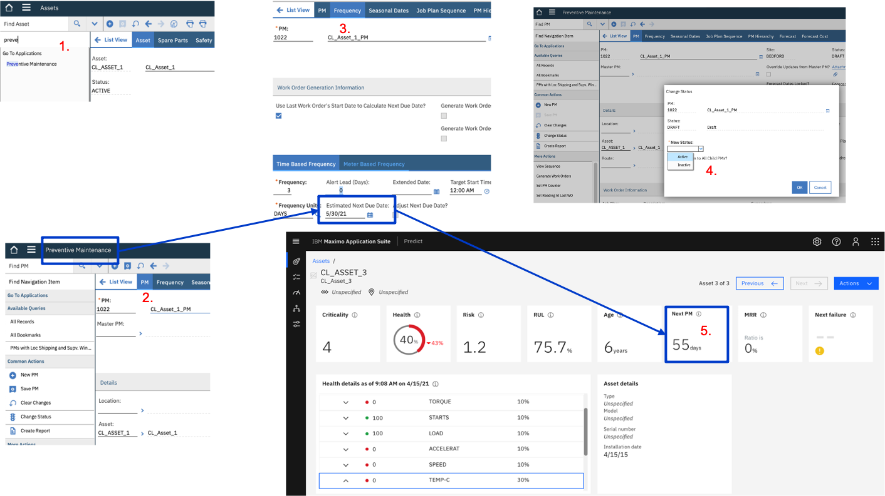

[WORK STILL IN PROGRESS - Page last updated on 05 May 2021]
[NEW] HEALTH Lab on Maximo Application Suite (8.3)
TIP: If the images seem too small to read, just right-click them, open in new tab and zoom in/out. I have tried to make all images readable with 1., 2. etc references to the corresponding instruction steps.
0. Prerequisites & Objectives
Prerequisites
If you plan to go only till section 9. Update the Health Scoring Method, then there are NO prerequisites - you will generate all the data that you need in this Health lab which is 'self contained'.
But if you plan to also complete the last section 10. Map IoT Devices & Readings to Assets & Meter Readings, then you will need to have completed the first section of the Monitor lab: 1. Generate IoT data. This is because - and that is the beauty of the fully-integrated suite - the IoT data that we created in the first steps of these APM labs is the exact same data that is used in these last steps - to enable true, near real-time health and condition monitoring !
Objectives
In this Module you will:
- set up the required Assets and Meter Groups in MANAGE (aka Maximo)
- register your IoT Devices and associate them to the MANAGE Assets and set up the required mappings between your IoT readings and Maximo Assets Meter readings
- create a sample Scoring Method in HEALTH
- create a Dashboard in HEALTH
Note that in this section, we will alternatively use MANAGE or Maximo - both names refer to the 1 same thing.
1. Setup initial Manage data
1. Launch Manage from MAS Suite Navigator
- Login to your MAS homepage. Click
Launchon the Manage card. This will open Maximo in another browser tab. Login with your Maximo ID/pwd.
2. Create 3 Assets & 1 Query
- In Maximo, click the
Go To Applications - AssetMenu. Click the+button to create an Asset, enterCL_Asset_1in both the Asset ID & Description fields. ClickSave. Repeat this step forCL_Asset_2andCL_Asset_3. - Click the
List Viewmenu. In the Asset field, enterCL_Asset*, click enter. This should return the list of your 3 just-created CL_Assets. Click the Save Query button, enterCL_Assetsin both the Query Name & Description. Tick thePublicbox.
3. Create a Meter Group
In this section, we will create a Maximo Meter Group containing 8 Meters that we will later associate to the IoT readings that we defined in the first section of the MONITOR lab.
- In Maximo left
Find Navigation Itembox, enter theMeter Groupsapplication. - Click the + button to create a Meter Group, enter
CL_Assetin both the Meter Group & Description fields. - Click
New Rowand in the Meter field, clickSelect Value. In the Select Value window that opens, enterTempin the Meter field, hit Enter, selectTEMP-C. - Repeat previous step with the following Meters:
VIBRATIONH,PRESSURE,SPEED,ACCELERAT,LOAD,TORQUE,STARTS. Click theSavebutton.
Note that, although Meters like PRESSURE often exist in Maximo installations out-of-the-box,
some of the Meters appearing in step 4. might not exist in Maximo yet. In which case, do the following:
(a) Go to the Meters menu via Find Navigation Item, (b) click Create new Meter, enter e.g. ACCELERAT (the maximum name length is 9 ),
select GAUGE as Meter Type, then Save. That newly created Meter can now be added to the Meter Group in step 4.

4. Associate Meter Group to Assets & create Meter Readings
- In Maximo, click the
Go To Applications - AssetMenu. In the Asset field, enterCL_Asset*, click enter. This will return the list of you 3 CL_Assets, clickCL_Asset_1. - Go to On CL_Asset_1, go to its Meters tab, click
Meter Group - Select Value. In the Select Value window,CL_Asset*, click enter, select theCL_AssetMeter Group. ClickSave. This has loaded all the Meters we defined in the Meter Group. - In left Find Navigation item box, enter
Enter M, clickEnter Meter Readings. For each Meter, enter values within the ranges that we defined for the IoT readings at the beginning of the Monitor lab in 2. Create IoT Simulation. For example:TEMP-C=37,VIBRATIONH=4,PRESSURE=22,SPEED=17,ACCELERAT=9,LOAD=100,TORQUE=12,STARTS=1. ClickOK. - Repeat steps 1. to 3. for
CL_Asset_2andCL_Asset_3with whatever Meter values you want.
5. Create a Condition Monitoring Rule
We are now going to define a Condition Monitoring rule where we will create upper and lower limits for the Meter Readings corresponding t0o the . Because we will later tie our original IoT readings from the Watson IoT Platform to Meter readings in Maximo, this will literally allow us to move towards a real Condition Based maintenance regime !
In this exercise, we will create such a rule for just 1 Asset (CL_Asset_1) and 1 reading (TEMP-C), but you can of course create more rules for other Assets and/or other readings.
-
In Maximo, click the
Go To Applications - Condition MonitoringMenu. Click the+to create a new Condition Monitoring. Name itCL_Asset. In the Point and Description fields, enterCL_Asset*. Next to the Asset field, clickSelect Value, search forCL_Asset_1, select it. Next to the Meter field, clickSelect Value, search forTEMP-C, select it. -
In the Upper Warning Limit field, enter
40, in the Lower Warning Limit field, enter35. In the Upper Action Limit field, enter45, in the Lower Action Limit field, enter30. Note that those values roughly correspond to the"temperature": random(35,40),values we originally defined in our IoT Simulation. With those limits defined, Condition Monitoring should pick-up those anomalous"temperature": random(46,48),we generated ! -
In the Upper Limit Job Pan field, click
Select Valueand select whatever existing Job Plan you want (we're just doing a demo here !). Do the same for Upper Limit Job Pan. ClickSave. Your final screen should look like picture below.
6. Populate other Maximo Data for the upcoming Health cards
- Populate
Priorityfield which will be used on the Risk & Criticality card in Health. On yourCL_Asset_1,just enter4on thePriorityfield, clickSave. - Create
Prevententive Maintenancefield which will be used to populate the - Create
Work Orderand associateLabor Coststo it, to populate the Next PM & MRR cards. - [OPTIONAL] Populate
Installation Date&Expected Lifefields for the RUL & Age card in Health.
2. Setup Health
1. View your Assets in Health
- From the MAS homepage, Click
Launchon the Health card. - Go to the top-left Assets menu. Enter
CLin the Search bar. This will return the 3 Assets we just created in Maximo. - Click on e.g.
CL_Asset_1, and observe the various cards that appear out-of-the-box - they are all empty for the moment. Let's populate them !
NOTE: it is normal that you see Predict in the top middle menu, even though you accessed this screen via the Health card. As you can see, Health & Predict actually appear on the same UI (i.e. Predict corresponding to the Predictions section just below the Health details section). When a user is entitled to both Predict & Health, Predict is always displayed. With a user only entitled to Health and NOT Predict, the top-middle menu would display Health.
2. Create Factors in Health associated to Meters in Manage
Before we create our Scoring Methods, let's first check that the Meters we associated to the 3 CL_Assets in 4. Associate Meter Group to Assets & create Meter Readings exist (or not) as Factors in Health already - if they already exist, good, if not, we'll just create them.
- Go to the top-left Scoring menu, then go to the Factors tab.
Check which ones of the Meters you earlier defined already exist as Factors in Health, e.g. typically you will see that
VIBRATIONH,TEMP-Care already defined, but NOT e.g.Speed. Let's addSpeedas a Factor. On the Factors tab, clickCreat Factor. - Name your Factor
Speed, selectMeterin theCalculate a score frombox. Then selectSpeedin the pop-up box. In the Score Normalization's Upper & Lower Limits, enter20&15(corresponding to the upper & lower limits we originally defined in 1. Create IoT Simulation).
3. Create a simple Health Scoring Method and associated Drivers
Let's first create the Health Method itself:
- Via the Scoring menu, go to the
Methodstab and clickCreate method. Name your methodCL_Asset_Health, and selectHealthin the Type drop-box. - Under the
Scored Assetsfield, clickSelectand select theCL_Assetsquery we defined in 2. Create 3 Assets & 1 Query section.
Let's now add Drivers to this Method:
- Staying on the
CL_Asset_HealthMethod, click the+top-right icon to create a Driver. Name itMeter Readings, selectOne or more factorsin theCalculate a score fromtick-box. ClickCreate. - The
Meter ReadingsDriver now appears in the Drivers list, but is still empty. We'll now add all the Factors (associated to Meter Readings) we just created to this Driver. Click the+top-right icon to select those Factors.
- In the opened
Select factorswindow, select the 8 Factors relevant to our CL_Assets and clickAdd to driver. The 8 Factors are now added to the Meter Readings Driver. - Click the top-right pencil to give a Weight to the 8 Factors.
Note the total of the 8 Weights must be 100%. Enter
10%for all Factors, except forTEMP-Cfor which enter30%.
4. Check your Health Score card and make it change
We are now going to first check that the Health Scoring Method we just defined results in a Health score being calculated for our CL_Assets, based on the Meter Readings we entered in earlier section. Then, we will enter new Meter Readings for CL_Asset_1 and notice that its Health Score automatically changes.
- Go to the top-left Assets menu. Enter CL in the Search bar. This will return the 3
CL_Assets. SelectCL_Asset_1. Notice how theHealthcard displays a score of 70%. Going into theHealth detailscard, notice how you can see the values of all the Meter Readings we entered, and how, based on the factors and Method we defined, each Meter either shows red or green. Note that you can also see all Meter Readings in theOperational statussection. - From Health, access Manage by clicking on the top-left
IBM Maximo Application Suitebanner, then by clicking the Manage card. - Go to Maximo's Asset menu, enter
CL*in the Asset field and click enter. This will display the 3CL_Assets, select yourCL_Asset_1. In theFind Navigation Itemmenu, writeEnter Meter Readings, click Enter and just enter a value of55forTEMP-C. This means thatTEMP-Cis going to move above the normal operating conditions we originally defined in the IoT Simulation (i.e. between 35 & 40 Celsius). - Go back to Health. Select your
CL_Asset_1row. Top-rigt, clickRecalculate Health score. Observe how your Health card gets updated from70%(orange) to40%(red).
5. Create Criticality & Risk Scoring Methods and populate Criticality & Risk cards
We now are going to create another type of Method, i.e. a Method of type Criticality
which will feed the Criticality card on a given Asset.
- From the top-left
Scoringmenu,go to theMethodtab and clickCreate method. Name itCL_Asset_Criticality. In theType, selectCriticality. In theScored Assets, select theCL_Assetsquery as we did in section 3. ClickCreate. - Click on the just created
CL_Asset_Criticalitylink. Click the to-right Edit pencil. In theFormulafield, just writePriority. This field corresponds to the Maximo Priority field we defined in section 1.6. So in this case, we are simply defining the Health Criticality score of a given Asset as the value of the Asset'sPriorityfield. We will see in next sections how more advanced formulas can be defined, where pretty much any other field associated to the given Asset in Maximo can be used. - As a final step for this Criticality card, make sure you tick the
Activecheckbox to activate ourCL_Asset_Criticalitymethod.
Let's now create a Risk Method and populate the Risk card.
NOTE: Because the definition of Risk might vary from an organisation to another, this Risk Method is fully configurable. You can use these Formulas references to have an idea of what custom formulas you can construct. By default, the Risk Score in MAS-Health is defined as follows: The level of risk that is associated with this asset. By default, risk is calculated by dividing the remainder of the health score by 100 and then multiplying the resulting number by the criticality score. For example, if the health score is 65 and the criticality score is 3, the remainder of the health score is 35, and the risk is 1.05. Both a health score and a criticality score must exist to calculate risk.
- From the top-left
Scoringmenu, go to theMethodtab and clickCreate method. Name itCL_Asset_Risk. In theType, selectRisk. In theScored Assets, select theCL_Assetsquery as we did in section 3. ClickCreate. - Click on the just created
CL_Asset_Risklink. Click the to-right Edit pencil. In theFormulafield, writeIF((ISNULLF(ASSETLOCSCORE("health")) || ISNULLF(ASSETLOCSCORE("criticality"))), NULLVALUE(),((100-ASSETLOCSCORE("health"))/100)*ASSETLOCSCORE("criticality")). That is the code translation of what we just wrote in earlier Note. Make sure you tick theActivecheckbox to activate ourCL_Asset_Riskmethod. - Go back to
CL_Asset_1, open it and top-right, clickEdit source aset record, that will open the aset in Maximo. There, simply enter3in thePriorityfield, clickSave, go back to Health. - Wait a minute (for some Manage-Health background process to complete),
go back to your
CL_Asset_1, click top-rigtRecalculate Health scoreand observe how both yourCriticalityandRiskcards now display data !
6. Populate the RUL & Age cards
The Age card displays the current system date minus the installation date of an asset.
The RUL card is calculated as follows: The remaining percentage of the asset's useful life. The remaining useful life (RUL) is calculated by subtracting the age from the manufacturer’s expected life. If the age exceeds the expected life, the RUL is 0%..
So back to CL_Asset_1 in Maximo, simply set a value in Installation Date (set it e.g. > 5 years in the past),
and a value in Expected Life (make it > 15 years). Go back to in Health, click top-right Recalculate health score
button, and ... there you go: the Age and RUL cards are now populated !
7. Populate the Next PM & MRR cards and the Asset Timeline
TO BE COMPLETED
The Next PM and MRR cards require a bit more work ...

9. Update the Health Scoring Method
TO BE COMPLETED
10. Map IoT Devices & Readings to Assets & Meter Readings
TO BE COMPLETED
-
From the top-left
Scoringmenu, -
From the top-left
Scoringmenu, -
From the top-left
Scoringmenu, -
From the top-left
Scoringmenu,